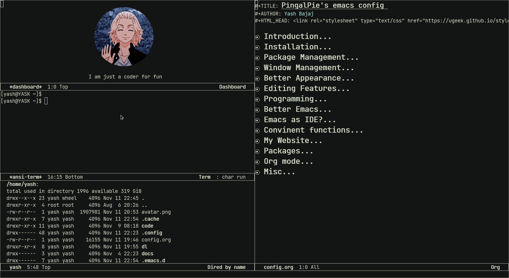

PingalPie's emacs config
Table of Contents
1. Introduction
This is an elisp program, which gets run everytime I start my emacs editor, Some people also call it emacs config. Why I'm writing it under org mode? Literate Programming Bitch!
- Author - Yash Bajaj
- Created: 11-11-2022
- License - GNU General Public License (GPL)

Figure 1: XKCD Emacs Comic
2. Installation
You can anytime use my emacs config, the installation is pretty simple,
Note - I won't suggest you to use it, without code understanding.
- First get rid of your
~/.emacs.dand~/.emacs. - Run
git clone git@bugswriter.com:~/emacs.d.git ~/.emacs.d - Open Emacs with finger crossed!
3. Package Management
Emacs is like an OS, it is highly extensible, you can install any new functionality by just installing a package, just like you do in an OS. You can also configure these programs by changing some elisp variables.
An average emacs user can easily ends up installing 100+ packages.
3.1. Melpa
- Reference: https://www.melpa.org
By default emacs contain less number of package choices. This is why we need Melpa. It's a package repository for emacs.
MELPA is an ELPA-compatible package repository that contains an enormous
amount of useful Emacs packages.
Think of it like VSCode Plugin Marketplace (eww).
(require 'package)
(setq package-enable-at-startup nil)
(add-to-list 'package-archives
'("melpa" . "https://melpa.org/packages/"))
(package-initialize)
3.2. Package Manager
- Reference: https://jwiegley.github.io/use-package
The use-package macro allows you to isolate package configuration in your .emacs file in a way that is both performance-oriented and, well, tidy.
(unless (package-installed-p 'use-package) (package-refresh-contents) (package-install 'use-package))
4. Window Management
4.1. Better Spliting
By default after spliting window, the cursor doesn't move to new window automatically. why emacs why? Isn't this obvious - user wants to move to new window? Whatever… These custom functions are gonna do it for us.
(defun split-and-follow-horizontally () (interactive) (split-window-below) (balance-windows) (other-window 1)) (defun split-and-follow-vertically () (interactive) (split-window-right) (balance-windows) (other-window 1))
Lets not forget to override our default keybindings of splitting window with our new custom functions.
(global-set-key (kbd "C-x 2") 'split-and-follow-horizontally) (global-set-key (kbd "C-x 3") 'split-and-follow-vertically)
4.2. Focus mode
This custom function window-focus-mode will allow us to quickly switch
a window to fullscreen and getting back to normal size.
(defun window-focus-mode ()
(interactive)
(if (= 1 (length (window-list)))
(jump-to-register '_)
(progn
(set-register '_ (list (current-window-configuration)))
(delete-other-windows))))
(global-set-key (kbd "C-c return") 'window-focus-mode)
4.3. Minor betterment
Everytime I press C-x k, emacs kill the buffer but not window.
Thankfully for this emacs already have a function exist.
(global-set-key (kbd "C-x k") 'kill-buffer-and-window)
4.4. Switch Window
- Reference: https://github.com/dimitri/switch-window
switch-window is an Emacs window switch tool, which offer a visual way to
choose a window to switch to, delete, split or other operations.
(use-package switch-window
:ensure t
:config
(setq switch-window-input-style 'minibuffer)
(setq switch-window-increase 4)
(setq switch-window-threshold 2)
(setq switch-window-shortcut-style 'qwerty)
(setq switch-window-qwerty-shortcuts
'("a" "s" "d" "f" "h" "j" "k" "l"))
:bind
([remap other-window] . switch-window))
5. Better Appearance

Figure 2: My Emacs
5.1. Basic Interface
These are setting that do not depend on packages and are built-in enhancements to the UI.
(scroll-bar-mode -1) (tool-bar-mode -1) (fringe-mode -1) (menu-bar-mode -1)
(setq use-dialog-box nil)
5.2. Theme
- Reference: https://gitlab.com/jjzmajic/ewal
A theme isn’t just a colorscheme. ewal lives by that. It uses pywal as a backend to spruce up your Emacs setup by default, but also sports over 200 built in palettes to do so if you don’t use the program (or shudders, you use a DOS system).
(use-package ewal :init (setq ewal-use-built-in-always-p nil ewal-use-built-in-on-failure-p t ewal-built-in-palette "sexy-material") :if (not window-system) :config (setq-default mode-line-format nil)) (use-package ewal-spacemacs-themes :if window-system :init (progn (show-paren-mode +1) (global-hl-line-mode)) :config (progn (load-theme 'ewal-spacemacs-classic t) (enable-theme 'ewal-spacemacs-classic)))
5.3. Font
I love JetBrains Mono. My best for programming. Using it since 2018.
(add-to-list 'default-frame-alist '(font . "JetBrains Mono-14"))
6. Editing Features
Emacs is filled with lots of minor packages, which makes editing more fun and easy, We all love emacs because of it, in this section, we are going to add those packages. which saves our minor editing efforts.
6.1. Hungry Delete
- Reference: https://github.com/nflath/hungry-delete
This package implements hungry deletion, meaning that deleting a whitespace character will delete all whitespace until the next non-whitespace character.
(use-package hungry-delete :ensure t :config (global-hungry-delete-mode))
7. Programming
7.1. Display line number
(add-hook 'prog-mode-hook 'display-line-numbers-mode)
8. Better Emacs
8.1. Start Up Screen (dashboard)
An extensible emacs startup screen showing you what’s most important.
(use-package dashboard :ensure t :config (dashboard-setup-startup-hook) (setq dashboard-startup-banner "~/.emacs.d/avatar.png") (setq dashboard-banner-logo-title "I am just a coder for fun")) (setq inhibit-startup-screen t)
8.2. Modeline
(use-package mood-line :ensure t :if window-system :init (mood-line-mode))
8.3. Command Menu (smex)
After pressing M-x emacs users see a prompt below, this prompt allow us to
run any command within emacs. This is what I loved about emacs when I was
learning it first, Almost anything, any functionality, any program, everything
is a function and I can access that function by just pressing M-x. But
memorizing all these commands are hard, also typing it. Emacs do provide
tab completion but it sucks. So we are gonna pull up the emacs magic and
install some packages to make it better.
8.3.1. Ido Mode
The Ido package lets you switch between buffers and visit files and directories with a minimum of keystrokes. It is a superset of Iswitchb, the interactive buffer switching package by Stephen Eglen.
(use-package ido-vertical-mode :ensure t :config (setq ido-enable-flex-matching t) (setq ido-everywhere t) (setq ido-vertical-define-keys 'C-n-and-C-p-only) :init (ido-mode 1) (ido-vertical-mode 1))
8.3.2. Smex
- Reference - https://github.com/nonsequitur/smex
Smex is a M-x enhancement for Emacs. Built on top of Ido, it provides a convenient interface to your recently and most frequently used commands. And to all the other commands, too.
(use-package smex
:ensure t
:init (smex-initialize)
:bind
("M-x" . smex))
8.4. Others
(global-set-key (kbd "C-c l n") 'flymake-goto-next-error)
(global-set-key (kbd "C-c l p") 'flymake-goto-prev-error)
(setq make-backup-files nil)
(setq auto-save-default nil)
(defalias 'yes-or-no-p 'y-or-n-p)
(global-set-key [(C-return)] 'toggle-maximize-buffer)
(use-package projectile
:ensure t
:config
(setq projectile-use-git-grep t)
:bind
("C-x p f" . projectile-find-file)
:init
(projectile-mode 1))
(use-package company
:ensure t
:hook prog-mode)
(use-package treemacs-projectile
:ensure t
:after (treemacs projectile))
9. Emacs as IDE?
Emacs is a writer's machine, we can use emacs for writing books, spreadsheets, thesis and almost anything. But I only use it for programming, blogs, and journaling. To be honest, I don't like coding in IDEs, I like simple editor with less features, but for bigger projects, especially which require frameworks, I find it very lame to write without IDE features like - auto-completion and type checker. For all my different kind of programming needs -
9.1. LSP Mode
- Reference - https://emacs-lsp.github.io
lsp-mode aims to provide IDE-like experience by providing optional integration with the
most popular Emacs packages like company , flycheck and projectile . Non-blocking
asynchronous calls.
(use-package lsp-mode :ensure t :init (setq lsp-keymap-prefix "C-c l") :config (setq lsp-headerline-breadcrumb-enable nil))
This package contains all the higher level UI modules of lsp-mode, like flycheck support and code lenses.
(use-package lsp-ui :ensure t)
9.2. Debugger Mode
- Reference: https://github.com/emacs-lsp/dap-mode
I am not a `print` noob, I use debugger. Lets get `dap-mode` for that. Emacs client/library for Debug Adapter Protocol is a wire protocol for communication between client and Debug Server. It’s similar to the LSP but provides integration with debug server.
(use-package dap-mode :after lsp-mode :ensure t)
9.3. Languages
Now, we will configure language server protocol and other settings for each, languages I work on, one by one.
9.3.1. Web (html/css/js)
- Web Mode
- Reference: https://web-mode.org
I love web-mode, I like writing website old school way (in html and css).
web-mode.elis an autonomous emacs major-mode for editing web templates. HTML documents can embed parts (CSS / JavaScript) and blocks (client / server side). Web mode provide so many cool shortcuts to work with html fast.(use-package web-mode :ensure t :config (setq web-mode-markup-indent-offset 2 web-mode-css-indent-offset 2 web-mode-code-indent-offset 2 web-mode-style-padding 2 web-mode-script-padding 2 web-mode-enable-auto-closing t web-mode-enable-auto-opening t web-mode-enable-auto-pairing t web-mode-enable-auto-indentation t) :mode (".html$" "*.php$" "*.tsx")) - Emmet-mode
- Reference: https://https//github.com/smihica/emmet-mode
Emmet is a plugin for many popular text editors which greatly improves HTML & CSS workflow -

Figure 3: Emmet Mode Demo
(use-package emmet-mode :ensure t)
9.3.2. Python
- Language Server Protocol
- Reference: https://github.com/emacs-lsp/lsp-pyright
Pyright is a fast type checker meant for large Python source bases. It can run in a “watch” mode and performs fast incremental updates when files are modified. For python I decided to use pyright language server protocol.
(use-package lsp-pyright :ensure t :hook (python-mode . (lambda () (setq indent-tabs-mode t) (setq tab-width 4) (setq python-indent-offset 4) (company-mode 1) (require 'lsp-pyright) (pyvenv-autoload) (lsp))))
9.4. Git Integration
- Reference: https://magit.vc
I can't use git without Magit. Magit is a complete text-based user interface to Git. It fills the glaring gap between the Git command-line interface and various GUIs, letting you perform trivial as well as elaborate version control tasks with just a couple of mnemonic key presses. Magit looks like a prettified version of what you get after running a few Git commands but in Magit every bit of visible information is also actionable to an extent that goes far beyond what any Git GUI provides and it takes care of automatically refreshing this output when it becomes outdated. In the background Magit just runs Git commands and if you wish you can see what exactly is being run, making it possible for you to learn the git command-line by using Magit. I ❤ Magit.
(use-package magit :ensure t)
10. Convinent functions
10.1. move line up/down
(defun move-text-internal (arg)
(cond
((and mark-active transient-mark-mode)
(if (> (point) (mark))
(exchange-point-and-mark))
(let ((column (current-column))
(text (delete-and-extract-region (point) (mark))))
(forward-line arg)
(move-to-column column t)
(set-mark (point))
(insert text)
(exchange-point-and-mark)
(setq deactivate-mark nil)))
(t
(let ((column (current-column)))
(beginning-of-line)
(when (or (> arg 0) (not (bobp)))
(forward-line)
(when (or (< arg 0) (not (eobp)))
(transpose-lines arg)
(when (and (eval-when-compile
'(and (>= emacs-major-version 24)
(>= emacs-minor-version 3)))
(< arg 0))
(forward-line -1)))
(forward-line -1))
(move-to-column column t)))))
(defun move-text-down (arg)
"Move region (transient-mark-mode active) or current line
arg lines down."
(interactive "*p")
(move-text-internal arg))
(defun move-text-up (arg)
"Move region (transient-mark-mode active) or current line
arg lines up."
(interactive "*p")
(move-text-internal (- arg)))
(global-set-key [M-up] 'move-text-up)
(global-set-key [M-down] 'move-text-down)
10.2. copy whole line
(defun copy-whole-line ()
(interactive)
(save-excursion
(kill-new
(buffer-substring
(point-at-bol)
(point-at-eol)))))
(global-set-key (kbd "C-c c") 'copy-whole-line)
10.3. kill whole word
(defun kill-whole-word () (interactive) (kill-word 1)) (global-set-key (kbd "C-c w") 'kill-whole-word)
10.4. config edit/reload
10.4.1. edit
(defun open-edit-config () (interactive) (find-file "~/.emacs.d/config.org")) (global-set-key (kbd "C-c e") 'open-edit-config)
10.4.2. reload
(defun config-reload () (interactive) (org-babel-load-file (expand-file-name "~/.emacs.d/config.org"))) (global-set-key (kbd "C-c r") 'config-reload)
11. My Website
Some functions related to my personal website tasks.
(defun log-diary() (interactive) (setq filename (concat "~/website/content/diary/" (format-time-string "%Y-%m-%d-%H-%M") ".md")) (find-file filename) (insert (concat "+++\ntitle = \"" (format-time-string "%Y.%m.%d %A %P %H:%M") "\"\n+++\n\n")))
12. Packages
12.1. Beacon
(use-package beacon :ensure t :init (beacon-mode 1))
12.2. Which Key
(use-package which-key :ensure t :config (which-key-mode))
13. Org mode
13.0.1. basic config
(setq org-src-window-setup 'current-window) (custom-set-faces '(org-level-1 ((t (:inherit outline-1 :height 1.5)))) '(org-level-2 ((t (:inherit outline-2 :height 1.2)))) '(org-level-3 ((t (:inherit outline-3 :height 1.1)))) '(org-level-4 ((t (:inherit outline-4 :height 1.0)))) '(org-level-5 ((t (:inherit outline-5 :height 1.0)))) )
13.0.2. Bullets
(use-package org-bullets :ensure t :config (add-hook 'org-mode-hook (lambda () (org-bullets-mode 1))))
14. Misc
Some extra setting, which doesn't fall in any category above.
14.1. Locales
(setq locale-coding-system 'utf-8) (set-terminal-coding-system 'utf-8) (set-keyboard-coding-system 'utf-8) (set-selection-coding-system 'utf-8) (prefer-coding-system 'utf-8)